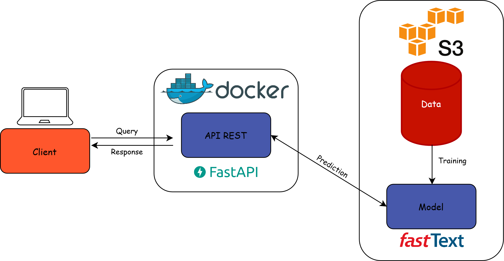
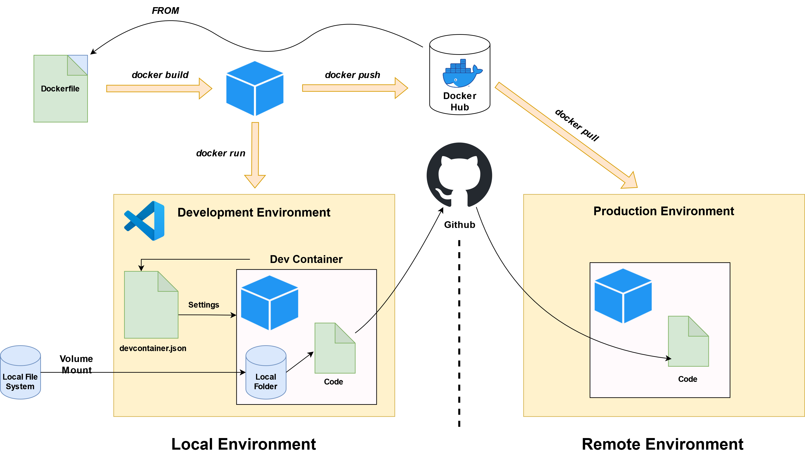
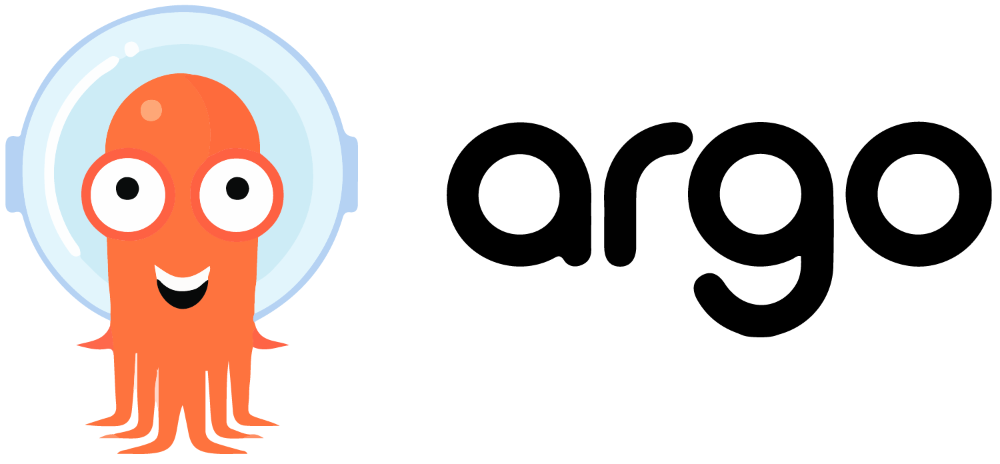

Une introduction au MLOps avec MLflow
Romain Avouac (Insee), Thomas Faria (Insee), Tom Seimandi (Insee)
Introduction
Qui sommes-nous ?
- Data scientists à l’Insee
- Équipes d’innovation méthodologique et informatique
- Nous soutenons et accompagnons des projets de datascience
- Contactez-nous
Contexte
Difficulté de passer des expérimentations à la mise en production de modèle de machine learning
Tirer parti des meilleures pratiques en génie logiciel
- Améliorer la reproductibilité des analyses
- Déployer des applications de manière extensible
- Surveiller les applications en cours d’exécution
L’approche DevOps
- Unifier le développement (dev) et l’administration système (ops)
- Réduire le temps de développement
- Maintenir la qualité logicielle

L’approche MLOps
- Intégrer les spécificités des projets de machine learning
- Expérimentation
- Amélioration continue

MLOps : principes
Reproductibilité
COntrôle de version
Automatisation
Surveillance
Collaboration
Pourquoi MLflow ?
De nombreux frameworks implémentent les principes du MLOps
Avantages de
MLflow:- Open-source
- Couvre l’entièreté du cycle de vie d’un modèle ML
- Agnostic au package ML utilisé
- Nous avons de l’expérience avec lui
Plateforme de formation : le SSP Cloud
- Un environnement d’innovation ouvert
- Cluster Kubernetes
- Stockage d’objets compatible S3
- De grandes ressources de calcul (y compris des GPU)
- Basé sur le projet Onyxia
- Une interface conviviale pour les utilisateurs permettant de lancer des services de datascience
- Un catalogue de services couvrant l’ensemble du cycle de vie des projets de datascience
Plan
1️⃣ Introduction à MLFlow
2️⃣ Un exemple concret: Prédiction du code APE pour les entreprises
3️⃣ Déployer un modèle ML via une API
4️⃣ Décentraliser l’optimisation des hyperparamètres
Application 0
Préparation de l’environnement de travail
Préparation de l’environnement de travail
On suppose que vous possédez un compte
Githubet que vous avez déjà créé un token. Forkez le repo de la formation en cliquant ici.Créez un compte sur le SSP Cloud en utilisant votre adresse e-mail professionnelle.
Lancez un service
MLflowen cliquant sur cette URL.Lancez un service
Jupyter-pythonen cliquant sur cette URL.Ouvrez le service
Jupyter-pythonet saisissez le mot de passe du service.Dans Jupyter, ouvrez un terminal et clonez votre dépôt que vous venez de fork (modifiez les deux premières lignes) :
Installez les packages nécessaires pour la formation :
Vous êtes prêt !
1️⃣ Introduction à MLFlow
Tracking server
- “Une API et une interface utilisateur pour enregistrer les paramètres, les versions du code, les métriques et les artefacts”

Projects
- “Un format standard pour ‘packager’ du code réutilisable en datascience”

Models
- “Une convention pour ‘packager’ des modèles de machine learning sous plusieurs formes”

Model registry
- “Un entrepôt centralisé de modèles, un ensemble d’API et une interface utilisateur pour gérer collaborativement le cycle de vie complet d’un modèle MLflow”

Application 1
Introduction aux concepts de MLflow
- Dans
JupyterLab, ouvrez le notebook situé à l’emplacementformation-mlops/notebooks/mlflow-introduction.ipynb. - Exécutez le notebook cellule par cellule. Si vous avez terminé plus tôt, explorez l’interface utilisateur de
MLflowet essayez de créer vos propres expériences à partir du code d’exemple fourni dans le notebook.
2️⃣ Un exemple concret
Contexte
NACE
- Nomenclature statistique des Activités économiques dans la Communauté Européenne
- Structure hierarchique avec 4 niveaux et 615 codes
A l’Insee, précédemment classifié par un algorithme basé sur des règles de décisions
problématique commune à beaucoup d’Instituts nationaux de statistique
Le modèle FastText
Modèle “sac de n-gram” : plongements lexicaux pour les mots mais aussi pour les n-gram de mots et de caractères
Un modèle très simple et rapide
OVA: One vs. All
Données utilisées
- Un cas d’utilisation simple avec seulement 2 variables:
- Description textuelle de l’activité - text
- Code NACE vrai labelisé par le moteur de règles – nace (732 modalités)
- Prétraitements standards :
- Passage en minuscules
- Suppression de la ponctuation
- Suppression des nombres
- Suppression des mots vide de sens
- Racinisation (stemming)
- …
MLflow avec framework non standard
- Facile d’utilisation avec une grande variété de framework de machine learning (scikit-learn, Keras, Pytorch…)
- Que se passe-t-il si nous avons besoin d’une plus grande flexibilité, par exemple, pour utiliser un framework personnalisé?
- Possibilité de suivre, enregistrer et déployer son propre modèle
MLflow avec framework non standard
- il y a 2 principales différences lorsque vous utilisez votre propre framework:
- L’enregistrement des paramètres, des métriques et des artefacts
- L’encapsulation de votre modèle personalisé afin que MLflow puisse le servir
De l’expérimentation à la production
- Les notebooks ne sont pas adaptés pour une mise en production de modèles ML :
- Potentiel limité d’automatisation des pipelines ML.
- Workflows peu clairs et peu reproductible.
- Limite la collaboration et le contrôle de version entre les membres de l’équipe.
- Modularité insuffisante pour gérer des composants ML complexe.
Application 2
Partie 1 : Des notebooks à un projet de type package
Lancez un service
VSCodeen cliquant sur cette URL. Ouvrez le service et saisissez le mot de passe du service.Tous les scripts liés à notre modèle personnalisé sont stockés dans le dossier
src. Consultez-les. Regardez également le fichierMLproject.Exécutez un entraînement du modèle à l’aide de MLflow. Pour ce faire, ouvrez un terminal (
-> Terminal -> New Terminal) et exécutez la commande suivante :Dans l’interface de
MLflow, examinez les résultats de votre exécution précédente :Experiments -> nace-prediction -> <nom_experience>
Vous avez entraîné le modèle avec certains paramètres par défaut. Dans le fichier
MLproject, vérifiez les paramètres disponibles. Ré-entraînez un modèle avec différents paramètres (par exemple,dim = 25).
Cliquez pour voir la commande
- Dans
MLflow, comparez les 2 modèles en traçant l’exactitude par rapport à un paramètre que vous avez modifié (par exempledim)Sélectionnez les 2 expériences -> Compare -> Scatter Plot -> Select your X and Y axis
Partie 1 : Des notebooks à un projet de type package
Lancez un service
VSCodeen cliquant sur cette URL. Ouvrez le service et saisissez le mot de passe du service.Dans VSCode, ouvrez un terminal (
-> Terminal -> New Terminal) et réalisez les étapes 6 et 7 de l’application 0 (clone et installation de packages).Tous les scripts liés à notre modèle personnalisé sont stockés dans le dossier
src. Consultez-les. Regardez également le fichierMLproject.Exécutez un entraînement du modèle à l’aide de MLflow. Dans un terminal, exécutez la commande suivante :
Dans l’interface de
MLflow, examinez les résultats de votre exécution précédente :Experiments -> nace-prediction -> <nom_experience>
Vous avez entraîné le modèle avec certains paramètres par défaut. Dans le fichier
MLproject, vérifiez les paramètres disponibles. Ré-entraînez un modèle avec différents paramètres (par exemple,dim = 25).
Cliquez pour voir la commande
- Dans
MLflow, comparez les 2 modèles en traçant l’exactitude par rapport à un paramètre que vous avez modifié (par exempledim)Sélectionnez les 2 expériences -> Compare -> Scatter Plot -> Select your X and Y axis
Application 2
Partie 2 : Distribution et interrogation d’un modèle personnalisé
- Explorez attentivement le fichier
src/train.py. Quelles sont les principales différences avec l’application 1 ? - Pourquoi pouvons-nous dire que le modèle
MLflowintègre le preprocessing ? - Dans
MLflow, enregistrez votre dernier modèle en tant quefasttextpour le rendre facilement interrogeable depuis l’APIPython. - Créez un script
predict-mlflow.pydans le dossiersrcdu projet. Ce script doit :- Charger la version 1 du modèle
fasttext - Utiliser le modèle pour prédire les codes NACE d’une liste donnée de descriptions d’activité (par exemple,
["vendeur d'huitres", "boulanger"]).
- Charger la version 1 du modèle
💡 N’oubliez pas de lire la documentation de la fonction predict() de la classe personnalisée (src/fasttext_wrapper.py) pour comprendre le format attendu des entrées !
Cliquez pour voir le contenu du script
- Exécutez votre script
predict-mlflow.py.
- Assurez-vous que les deux descriptions suivantes donnent la même prédiction principale :
"COIFFEUR"et"coiffeur, & 98789". - Modifiez la valeur du paramètre
ket essayez de comprendre comment la structure de la sortie a changé en conséquence.
3️⃣ Déployer un modèle ML via une API
Mise en service du modèle
- Une fois qu’un modèle de machine learning a été développé, il doit être déployé pour servir ses utilisateurs finaux.
- Quelle est l’infrastructure de production ?
- Qui sont les utilisateurs finaux ?
- Traitement par lots (batch) par rapport au traitement en ligne (online)
Configuration standard
Infrastructure de production : cluster Kubernetes
Le modèle peut servir diverses applications
- Rendre le modèle accessible via une API
Traitement en ligne (online serving)
- Les applications client envoient une requête à l’API et reçoivent une réponse rapide
Exposer un modèle via une API
Exécuter une API dans un conteneur
Conteneur : environnement autonome et isolé qui encapsule le modèle, ses dépendances et le code de l’API
Les conteneurs offrent une grande portabilité et scalabilité pour distribuer le modèle de manière efficace.
Le fichier
Dockerfileest utilisé pour configurer et construire le conteneur Docker.
Développement avec l’architecture Docker

Déploiement d’une API sur Kubernetes
- 3 fichiers principaux sont nécessaires pour déployer une API :
deployment.yaml: définit le fonctionnement de l’API (image du conteneur, ressources et variables d’environnement)service.yaml: établit un point de terminaison réseau interne stable pour l’API.ingress.yaml: fournit un point d’entrée pour les clients externes afin d’accéder à l’API.
Application 3
Déploiement manuel d’un modèle ML en tant qu’API
- Nous avons construit une API REST très simpliste à l’aide de FastAPI. Tous les fichiers sous-jacents se trouvent dans le dossier
app. Consultez-les. - Ouvrez le
Dockerfilepour voir comment l’image est construite. L’image est automatiquement reconstruite et publiée via Github Actions, si vous êtes intéressé, jetez un coup d’œil à.github/workflows/build_image.yml. Dans le cadre de cette formation, nous allons tous utiliser cette même image. - Ouvrez le fichier
kubernetes/deployment.ymlet modifiez les lignes surlignées comme suit :
deployment.yml
- Ouvrez le fichier
kubernetes/ingress.ymlet modifiez (deux fois) l’URL du point de terminaison de l’API pour qu’elle soit de la forme<votre_prénom>-<votre_nom>-api.lab.sspcloud.fr. - Appliquez les trois contrats
Kubernetescontenus dans le dossierkubernetes/dans un terminal pour déployer l’API
- Accédez à votre API en utilisant l’URL définie dans votre fichier
ingress.yml. - Affichez la documentation de votre API en ajoutant
/docsà votre URL. - Testez votre API !
- Réentrainez un nouveau modèle et déployez ce nouveau modèle dans votre API
Cliquez pour voir les étapes
- Entrainez un modèle.
- Enregistrez le modèle dans MLflow.
- Ajustez votre variable d’environnement
MLFLOW_MODEL_NAMEouMLFLOW_MODEL_VERSION(si vous n’avez pas modifié le nom du modèle) dans le fichierdeployment.yml. - Appliquez les nouveaux contrats
Kubernetespour mettre à jour l’API
- Rafraîchissez votre API et vérifiez sur la page d’accueil qu’elle est désormais basée sur la nouvelle version du modèle.
Déploiement continu d’un modèle ML en tant qu’API
⚠️ Les précédentes applications doivent avoir été réalisées avec l’option Git pour pouvoir suivre celle-ci.
Précedement, vous avez déployé votre modèle manuellement. Grâce à ArgoCD il est possible de déployer un modèle de manière continu, ainsi chaque modification d’un fichier présent dans le dossier kubernetes/ va entrainer le redéploiement automatique en se synchronisation avec votre dépôt Github. Pour vous en convaincre, suivez les étapes ci dessous :
- Lancez un service
ArgoCDen cliquant sur cette URL. Ouvrez le service, saisissez l’identifiant (admin) et le mot de passe du service. - Reprenez les 4 premières étapes du déploiement manuel.
- Faite un commit des changements effectués et pousser vers votre dépôt Github.
- Ouvrez le template
argocd/template-argocd.ymlet modifiez les lignes surlignées :
template-argocd.yml
- Dans ArgoCD, cliquez sur
New ApppuisEdit as a YAML. Copiez-collez le contenu deargocd/template-argocd.ymlet cliquez surCreate. - Accédez à votre API en utilisant l’URL définie dans votre fichier
ingress.yml. - Affichez la documentation de votre API en ajoutant
/docsà votre URL. - Testez votre API !
- Réentrainez un nouveau modèle et déployez automatiquement ce nouveau modèle dans votre API
Cliquez pour voir les étapes
- Entrainez un modèle.
- Enregistrez le modèle dans MLflow.
- Ajustez votre variable d’environnement
MLFLOW_MODEL_NAMEouMLFLOW_MODEL_VERSION(si vous n’avez pas modifié le nom du modèle) dans le fichierdeployment.yml. - Faite un commit de ces changements et poussez les sur votre dépôt Github.
- Patientez 5 minutes qu’
ArgoCDsynchronise automatiquement les changements depuis votre dépôt Github ou bien forcez la synchronisation. Rafraîchissez votre API et vérifiez sur la page d’accueil qu’elle est désormais basée sur la nouvelle version du modèle.
4️⃣ Décentraliser l’optimisation des hyperparamètres
Entraînement parallèle
- Avec notre configuration, nous pouvons entraîner des modèles un par un et enregistrer toutes les informations pertinentes sur le serveur MLflow Tracking.
- Et si nous voulions entraîner plusieurs modèles en même temps, par exemple pour optimiser les hyperparamètres ?
Automatisation du workflow
- Principes généraux :
- Définir des workflows où chaque étape du processus est un conteneur (reproductibilité).
- Modéliser les workflows à plusieurs étapes comme une séquence de tâches ou comme un graphe acyclique orienté.
- Cela permet d’exécuter facilement en parallèle des tâches intensives en calcul pour l’entraînement du modèle ou le traitement des données.
Argo workflows
- Un moteur de workflow populaire pour orchestrer des tâches parallèles sur
Kubernetes.- Open-source
- Container-native
- Disponible sur le SSP Cloud

Bonjour le monde
apiVersion: argoproj.io/v1alpha1
kind: Workflow # nouveau type de spécification k8s
metadata:
generateName: hello-world- # nom de la spécification du workflow
spec:
entrypoint: whalesay # invoque le modèle whalesay
templates:
- name: whalesay # nom du modèle
container:
image: docker/whalesay
command: [ cowsay ]
args: [ "bonjour le monde" ]Que se passe-t-il ?
Que se passe-t-il ?
Que se passe-t-il ?
Paramètres
- Les modèles peuvent prendre des paramètres d’entrée
apiVersion: argoproj.io/v1alpha1
kind: Workflow
metadata:
generateName: hello-world-parameters-
spec:
entrypoint: whalesay
arguments:
parameters:
- name: message
value: bonjour le monde
templates:
- name: whalesay
inputs:
parameters:
- name: message # déclaration du paramètre
container:
image: docker/whalesay
command: [cowsay]
args: ["{{inputs.parameters.message}}"]Workflows à plusieurs étapes
- Les workflows à plusieurs étapes peuvent être spécifiés (
stepsoudag)
apiVersion: argoproj.io/v1alpha1
kind: Workflow
metadata:
generateName: steps-
spec:
entrypoint: hello-hello-hello
# Cette spécification contient deux modèles : hello-hello-hello et whalesay
templates:
- name: hello-hello-hello
# Au lieu d'exécuter uniquement un conteneur
# Ce modèle a une séquence d'étapes
steps:
- - name: hello1 # hello1 est exécuté avant les étapes suivantes
template: whalesay
- - name: hello2a # double tiret => exécuté après l'étape précédente
template: whalesay
- name: hello2b # tiret simple => exécuté en parallèle avec l'étape précédente
template: whalesay
- name: whalesay # nom du modèle
container:
image: docker/whalesay
command: [ cowsay ]
args: [ "bonjour le monde" ]Que se passe-t-il ?
Que se passe-t-il ?
Que se passe-t-il ?
Que se passe-t-il ?
Que se passe-t-il ?
Autres applications
- Workflow pour tester des modèles enregistrés, ou des modèles poussés en pré-production / production.
- Les workflows peuvent être déclenchés automatiquement (via Argo Events, par exemple).
- Workflows d’entraînement continue.
- Pipelines de machine learning distribués en général (téléchargement de données, traitement, etc.).
Autres applications
Notes
- Python SDK pour Argo Workflows
- Pipelines Kubeflow
- Couler : interface unifiée pour la construction et la gestion de workflows sur différents moteurs de workflows
- Autres outils d’orchestration natifs de Python : Apache Airflow, Metaflow, Prefect
Application 4
Partie 1 : introduction à Argo Workflows
- Lancez un service
Argo Workflowsen cliquant sur cette URL. Ouvrez le service et saisissez le mot de passe du service (soit copié automatiquement, soit disponible dans le fichierREADMEdu service). - Dans
VSCode, créez un fichierhello_world.yamlà la racine du projet avec le contenu suivant :
hello_world.yml
apiVersion: argoproj.io/v1alpha1
kind: Workflow
metadata:
generateName: hello-world-
labels:
workflows.argoproj.io/archive-strategy: "false"
annotations:
workflows.argoproj.io/description: |
Ceci est un exemple simple de "Hello World".
Vous pouvez également l'exécuter en Python : https://couler-proj.github.io/couler/examples/#hello-world
spec:
entrypoint: whalesay
templates:
- name: whalesay
container:
image: docker/whalesay:latest
command: [cowsay]
args: ["hello world"]- Soumettez le workflow “Hello World” via un terminal dans
VSCode:
- Ouvrez l’interface utilisateur d’
Argo Workflows. Trouvez les logs du workflow que vous venez de lancer. Vous devriez voir le logo Docker .
Application 4
Partie 2 : décentralisation de l’optimisation des hyperparamètres
- Jetez un coup d’œil au fichier
argo_workflows/workflow.yml. Que pensez-vous qu’il se passera lorsque nous soumettrons ce flux de travail ? - Modifiez la ligne surlignée de la même manière que dans l’application 3.
workflow.yml
- Soumettez le flux de travail et observez les tâches s’exécuter en direct dans l’interface utilisateur.
- Une fois que toutes les tâches sont terminées, visualisez les logs de l’ensemble du flux de travail.
- Enfin, ouvrez l’interface utilisateur de
MLflowpour vérifier ce qui a été fait.
5️⃣ Machine learning en production
Application 5
Partie 1 : Requêter votre modèle déployé
- Créez un fichier
predict-api.py. Ce script doit :- Lire le fichier parquet disponible à l’adresse suivante :
- Effectuer des requêtes à votre API pour chaque libellé présent dans le fichier parquet.
- Afficher le résultats des prédictions
Cliquez pour voir le contenu du script
predict-api.py
import pandas as pd
import requests
# Fonction pour effectuer la requête à l'API
def make_prediction(api_url: str, description: str):
params = {"description": description, "nb_echoes_max": 2}
response = requests.get(api_url, params=params)
return response.json()
# URL des données
data_path = "https://minio.lab.sspcloud.fr/projet-formation/diffusion/mlops/data/data_to_classify.parquet"
# Charge le fichier Parquet dans un DataFrame pandas
df = pd.read_parquet(data_path)
# Votre API URL
api_url = "https://<your_firstname>-<your_lastname>-api.lab.sspcloud.fr/predict"
# Effectue les requêtes
responses = df["text"].apply(lambda x: make_prediction(api_url, x))
# Affiche le DataFrame avec les résultats des prédictions
print(pd.merge(df, pd.json_normalize(responses),
left_index=True,
right_index=True))- Exécutez votre script
predict-api.py.
Dans ArgoCD, ouvrez votre application puis cliquez sur votre pod qui doit commencer par
"codification-api-...". Observez les logs.Quelles informations détenez-vous ? Est-ce suffisant ?
Avertissement
Nous avons ici réalisé une succession de requêtes GET car nous avons un seul point d’entrée vers notre API. Pour réaliser des requêtes en batch il est préférable de réaliser des requêtes POST.
Observabilité
Application 5
Partie 2 : Logger des métriques métier
- Grâce au package logging, rajoutez des logs à votre API. Pour chaque requête, affichez le libellé à coder ainsi que les réponses renvoyées par votre API. Pour cela, modifiez le fichier
app/main.py.
Cliquez pour voir les étapes à réaliser
- Importez le package logging :
- Définissez la configuration de vos logs avant la définition de votre premier point d’entrée :
main.py
- Ajoutez une le libellé et la réponse de l’API dans vos logs :
Faites un commit de vos changements et poussez les sur votre dépôt distant.
Dès lors que vous réalisez un changement sur votre API, il est nécessaire de la redéployer pour que les changements soient effectifs. En théorie, il serait nécessaire de re-construire une nouvelle image pour notre API contenant les derniers ajustements. Pour simplifier, nous avons déjà construit les deux images avec et sans logs dans l’API. Jusqu’à présent vous avez utilisé l’image sans logs, redéployez votre API en utilisant l’image avec les logs dont le tag est
logs.
Cliquez pour voir les étapes à réaliser
- Dans le fichier
kubernetes/deployment.yml, remplacer le tagno-logspar le taglogs:
deployment.yml
Faites un commit de vos changements et poussez les sur votre dépôt distant.
Patientez 5 minutes qu’
ArgoCDsynchronise automatiquement les changements depuis votre dépôt Github ou bien forcez la synchronisation.
- Exécutez votre script
predict-api.py.
- Dans ArgoCD, ouvrez votre application puis cliquez sur votre pod qui doit commencer par
"codification-api-...". Observez les logs.
Création d’un tableau de bord
- Les logs de l’API contiennent maintenant des informations métier.
- Pour analyser le comportement du moteur de codification, création d’un tableau de bord.
- Pour le traitement/stockage des logs :
- Elastic
- Pipeline ETL
- Solutions multiples pour le tableau de bord : Grafana, Quarto Dashboards, Apache Superset, …
Un exemple de stack
- ETL sous forme d’un cron job qui parse les logs et les stocke au format
.parquet. - Utilisation de DuckDB pour requêter les fichiers
.parquet… - … et créer les composants d’un Quarto Dashboards.
- Le tableau de bord est un site statique à actualiser tous les jours par exemple.
Un exemple de stack
Application 5
Partie 3 : Création d’un tableau de bord de monitoring
Nous allons utiliser
Quarto Dashboardsqui fera partie de la version 1.4 deQuarto. Téléchargez et installez la pre-release.Ouvrez le fichier
dashboard/index.qmdet inspectez le code. Pour récupérer les données nécessaires à la création du tableau de bord, on utilise un SGBD serverless :DuckDB.DuckDBnous permet de faire des requêtesSQLsur un fichier.parquetcontenant des logs parsés. Ce fichier contient une ligne par prédiction, avec les variablestimestamp,text,prediction_1,proba_1,prediction_2etproba_2.Pour visualiser le tableau de bord, entrez les commandes suivantes dans un
Terminaldepuis la racine du projet et cliquez sur le lien généré.Pour l’instant le pourcentage de prédictions avec une probabilité supérieure à 0.8 ne correspond pas à la réalité. Modifiez la requête SQL permettant d’obtenir la variable
pct_predictionspour afficher la bonne valeur.
Cliquez pour voir la réponse
- Les deux graphiques situés en bas du tableau de bord ne sont pas corrects non plus. Modifiez la requête SQL permettant d’obtenir la variable
daily_statspour afficher les bons graphiques.
Cliquez pour voir la réponse
daily_stats = duckdb.sql(
"""
SELECT
CAST(timestamp AS DATE) AS date,
COUNT(*) AS n_liasses,
(
COUNT(
CASE WHEN data.proba_1 > 0.8 THEN 1 END
) * 100.0 / COUNT(*)
) AS pct_high_proba
FROM data
GROUP BY CAST(timestamp AS DATE);
"""
).to_df()- Constatez les changements apportés au tableau de bord.
6️⃣ Défis organisationnels du MLOps
Conclusion
Une introduction au MLOps avec MLflow